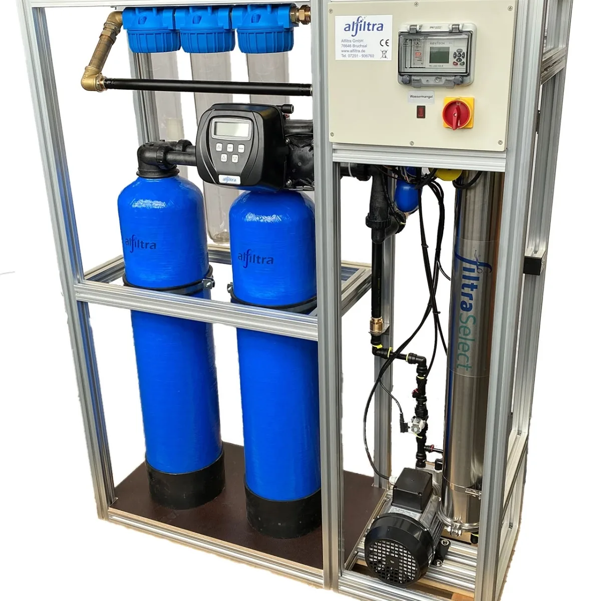

Commercial RO
Alfiltra RO Professional
Professionelle Alfiltra-Umkehrosmoseanlagen für höhere Reinwasserbedarfe; Ausführung und Leistung sind projektabhängig.
Preis auf Anfrage
Technische Daten
| Technologie | Umkehrosmose |
| Einsatz | Gewerbe und professionelle Anwendungen |
| Baureihe | Projekt- und leistungsabhängig |
| Installation | Festwasseranlage |
| Konfiguration | Vorbehandlung, Membranleistung und Speicher nach Bedarf |
| Preis | Auf Anfrage bzw. modellabhängig |
| Hinweis | Die verlinkte Seite ist eine Produktübersicht; technische Werte unterscheiden sich je Anlage |
Datenhinweis
Die Angaben stammen aus öffentlich zugänglichen Hersteller- und Produktunterlagen. Nicht veröffentlichte Werte wurden nicht geschätzt. Änderungen und Modellvarianten sind möglich.